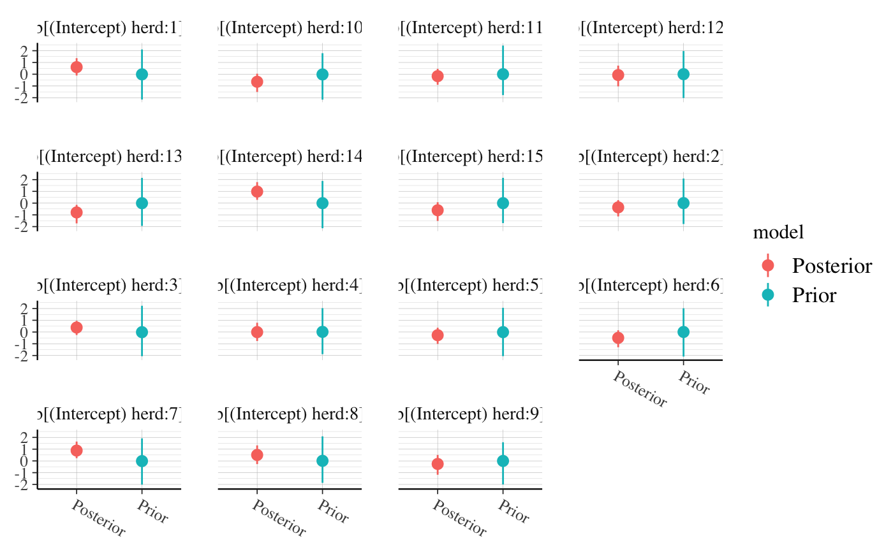
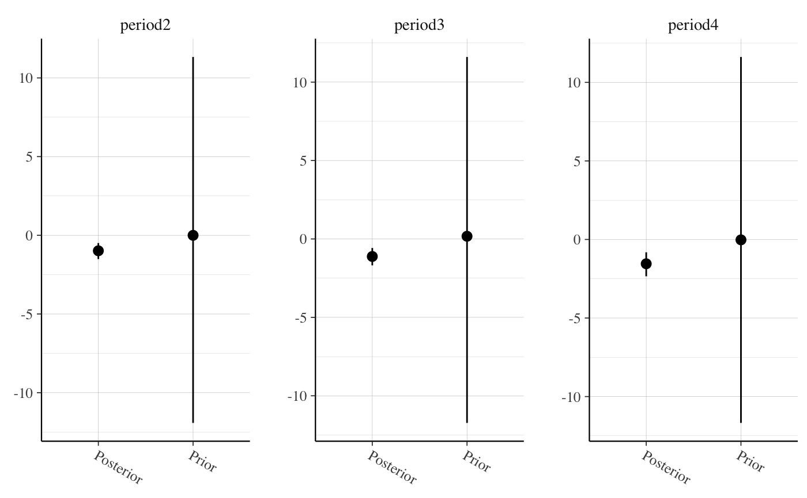
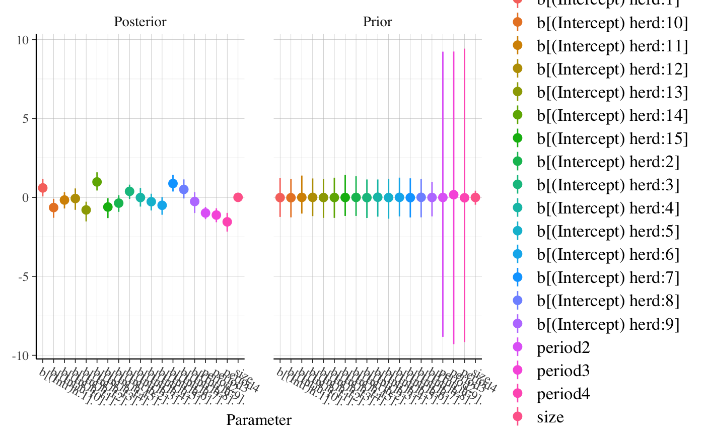
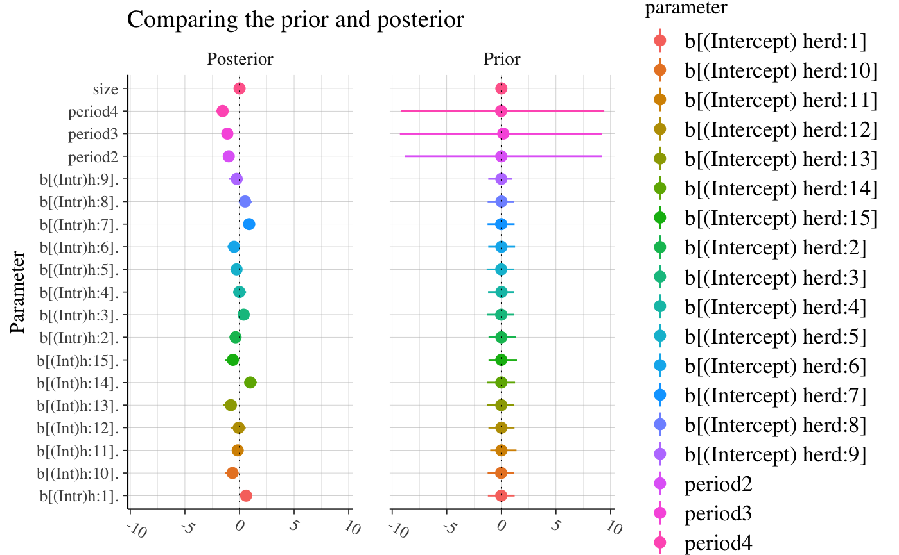
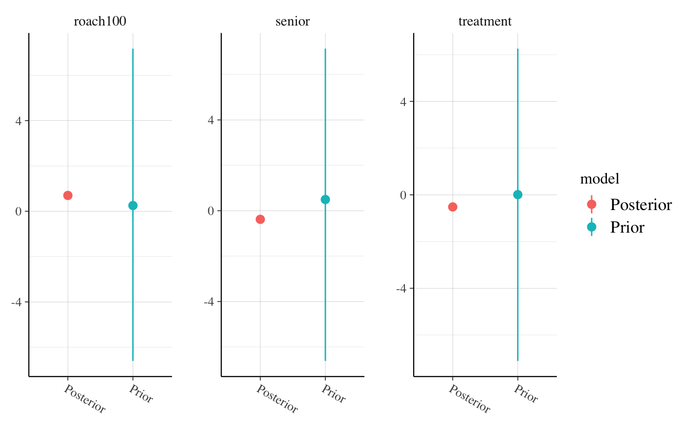
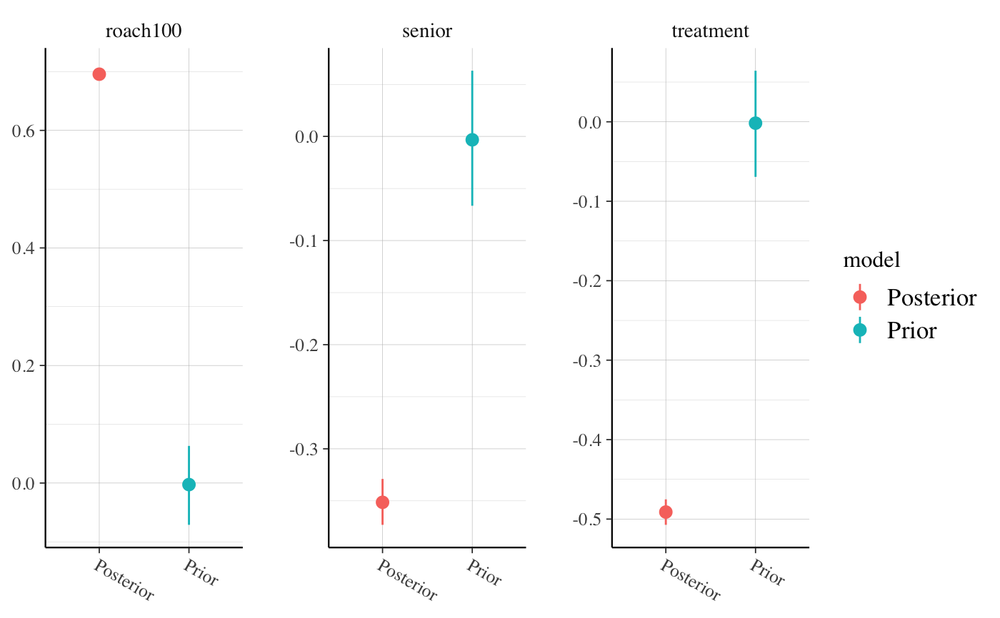
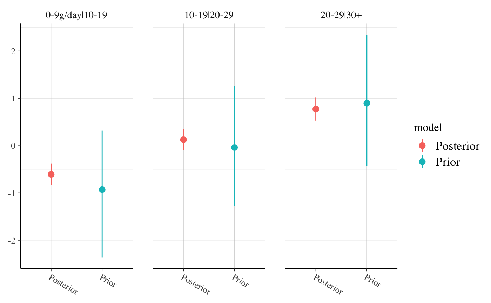
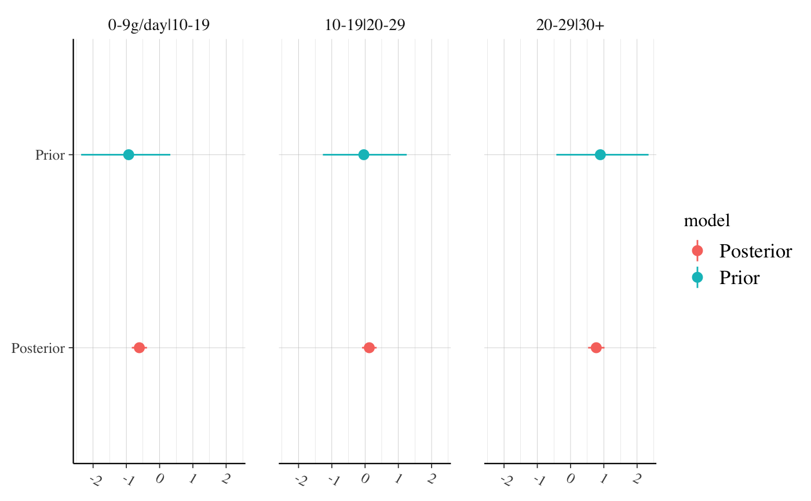

Plot medians and central intervals comparing parameter draws from the prior
and posterior distributions. If the plotted priors look different than the
priors you think you specified it is likely either because of internal
rescaling or the use of the QR argument (see the documentation for the
prior_summary method for details on
these special cases).
posterior_vs_prior(object, ...) # S3 method for stanreg posterior_vs_prior( object, pars = NULL, regex_pars = NULL, prob = 0.9, color_by = c("parameter", "vs", "none"), group_by_parameter = FALSE, facet_args = list(), ... )
Arguments
| object | A fitted model object returned by one of the
rstanarm modeling functions. See |
|---|---|
| ... | The S3 generic uses |
| pars | An optional character vector specifying a subset of parameters to
display. Parameters can be specified by name or several shortcuts can be
used. Using In addition, for If |
| regex_pars | An optional character vector of regular
expressions to use for parameter selection. |
| prob | A number \(p \in (0,1)\) indicating the desired posterior probability mass to include in the (central posterior) interval estimates displayed in the plot. The default is \(0.9\). |
| color_by | How should the estimates be colored? Use |
| group_by_parameter | Should estimates be grouped together by parameter
( |
| facet_args | A named list of arguments passed to
|
Value
A ggplot object that can be further customized using the ggplot2 package.
References
Gabry, J. , Simpson, D. , Vehtari, A. , Betancourt, M. and Gelman, A. (2019), Visualization in Bayesian workflow. J. R. Stat. Soc. A, 182: 389-402. doi:10.1111/rssa.12378, (journal version, arXiv preprint, code on GitHub)
Examples
# \dontrun{ if (!exists("example_model")) example(example_model) # display non-varying (i.e. not group-level) coefficients posterior_vs_prior(example_model, pars = "beta")#> #># show group-level (varying) parameters and group by parameter posterior_vs_prior(example_model, pars = "varying", group_by_parameter = TRUE, color_by = "vs")#> #># group by parameter and allow axis scales to vary across facets posterior_vs_prior(example_model, regex_pars = "period", group_by_parameter = TRUE, color_by = "none", facet_args = list(scales = "free"))#> #># assign to object and customize with functions from ggplot2 (gg <- posterior_vs_prior(example_model, pars = c("beta", "varying"), prob = 0.8))#> #>gg + ggplot2::geom_hline(yintercept = 0, size = 0.3, linetype = 3) + ggplot2::coord_flip() + ggplot2::ggtitle("Comparing the prior and posterior")# compare very wide and very narrow priors using roaches example # (see help(roaches, "rstanarm") for info on the dataset) roaches$roach100 <- roaches$roach1 / 100 wide_prior <- normal(0, 10) narrow_prior <- normal(0, 0.1) fit_pois_wide_prior <- stan_glm(y ~ treatment + roach100 + senior, offset = log(exposure2), family = "poisson", data = roaches, prior = wide_prior)#> #> SAMPLING FOR MODEL 'count' NOW (CHAIN 1). #> Chain 1: #> Chain 1: Gradient evaluation took 3.5e-05 seconds #> Chain 1: 1000 transitions using 10 leapfrog steps per transition would take 0.35 seconds. #> Chain 1: Adjust your expectations accordingly! #> Chain 1: #> Chain 1: #> Chain 1: Iteration: 1 / 2000 [ 0%] (Warmup) #> Chain 1: Iteration: 200 / 2000 [ 10%] (Warmup) #> Chain 1: Iteration: 400 / 2000 [ 20%] (Warmup) #> Chain 1: Iteration: 600 / 2000 [ 30%] (Warmup) #> Chain 1: Iteration: 800 / 2000 [ 40%] (Warmup) #> Chain 1: Iteration: 1000 / 2000 [ 50%] (Warmup) #> Chain 1: Iteration: 1001 / 2000 [ 50%] (Sampling) #> Chain 1: Iteration: 1200 / 2000 [ 60%] (Sampling) #> Chain 1: Iteration: 1400 / 2000 [ 70%] (Sampling) #> Chain 1: Iteration: 1600 / 2000 [ 80%] (Sampling) #> Chain 1: Iteration: 1800 / 2000 [ 90%] (Sampling) #> Chain 1: Iteration: 2000 / 2000 [100%] (Sampling) #> Chain 1: #> Chain 1: Elapsed Time: 0.225125 seconds (Warm-up) #> Chain 1: 0.217826 seconds (Sampling) #> Chain 1: 0.442951 seconds (Total) #> Chain 1: #> #> SAMPLING FOR MODEL 'count' NOW (CHAIN 2). #> Chain 2: #> Chain 2: Gradient evaluation took 2.4e-05 seconds #> Chain 2: 1000 transitions using 10 leapfrog steps per transition would take 0.24 seconds. #> Chain 2: Adjust your expectations accordingly! #> Chain 2: #> Chain 2: #> Chain 2: Iteration: 1 / 2000 [ 0%] (Warmup) #> Chain 2: Iteration: 200 / 2000 [ 10%] (Warmup) #> Chain 2: Iteration: 400 / 2000 [ 20%] (Warmup) #> Chain 2: Iteration: 600 / 2000 [ 30%] (Warmup) #> Chain 2: Iteration: 800 / 2000 [ 40%] (Warmup) #> Chain 2: Iteration: 1000 / 2000 [ 50%] (Warmup) #> Chain 2: Iteration: 1001 / 2000 [ 50%] (Sampling) #> Chain 2: Iteration: 1200 / 2000 [ 60%] (Sampling) #> Chain 2: Iteration: 1400 / 2000 [ 70%] (Sampling) #> Chain 2: Iteration: 1600 / 2000 [ 80%] (Sampling) #> Chain 2: Iteration: 1800 / 2000 [ 90%] (Sampling) #> Chain 2: Iteration: 2000 / 2000 [100%] (Sampling) #> Chain 2: #> Chain 2: Elapsed Time: 0.162369 seconds (Warm-up) #> Chain 2: 0.206425 seconds (Sampling) #> Chain 2: 0.368794 seconds (Total) #> Chain 2: #> #> SAMPLING FOR MODEL 'count' NOW (CHAIN 3). #> Chain 3: #> Chain 3: Gradient evaluation took 2.5e-05 seconds #> Chain 3: 1000 transitions using 10 leapfrog steps per transition would take 0.25 seconds. #> Chain 3: Adjust your expectations accordingly! #> Chain 3: #> Chain 3: #> Chain 3: Iteration: 1 / 2000 [ 0%] (Warmup) #> Chain 3: Iteration: 200 / 2000 [ 10%] (Warmup) #> Chain 3: Iteration: 400 / 2000 [ 20%] (Warmup) #> Chain 3: Iteration: 600 / 2000 [ 30%] (Warmup) #> Chain 3: Iteration: 800 / 2000 [ 40%] (Warmup) #> Chain 3: Iteration: 1000 / 2000 [ 50%] (Warmup) #> Chain 3: Iteration: 1001 / 2000 [ 50%] (Sampling) #> Chain 3: Iteration: 1200 / 2000 [ 60%] (Sampling) #> Chain 3: Iteration: 1400 / 2000 [ 70%] (Sampling) #> Chain 3: Iteration: 1600 / 2000 [ 80%] (Sampling) #> Chain 3: Iteration: 1800 / 2000 [ 90%] (Sampling) #> Chain 3: Iteration: 2000 / 2000 [100%] (Sampling) #> Chain 3: #> Chain 3: Elapsed Time: 0.243922 seconds (Warm-up) #> Chain 3: 0.231001 seconds (Sampling) #> Chain 3: 0.474923 seconds (Total) #> Chain 3: #> #> SAMPLING FOR MODEL 'count' NOW (CHAIN 4). #> Chain 4: #> Chain 4: Gradient evaluation took 2.2e-05 seconds #> Chain 4: 1000 transitions using 10 leapfrog steps per transition would take 0.22 seconds. #> Chain 4: Adjust your expectations accordingly! #> Chain 4: #> Chain 4: #> Chain 4: Iteration: 1 / 2000 [ 0%] (Warmup) #> Chain 4: Iteration: 200 / 2000 [ 10%] (Warmup) #> Chain 4: Iteration: 400 / 2000 [ 20%] (Warmup) #> Chain 4: Iteration: 600 / 2000 [ 30%] (Warmup) #> Chain 4: Iteration: 800 / 2000 [ 40%] (Warmup) #> Chain 4: Iteration: 1000 / 2000 [ 50%] (Warmup) #> Chain 4: Iteration: 1001 / 2000 [ 50%] (Sampling) #> Chain 4: Iteration: 1200 / 2000 [ 60%] (Sampling) #> Chain 4: Iteration: 1400 / 2000 [ 70%] (Sampling) #> Chain 4: Iteration: 1600 / 2000 [ 80%] (Sampling) #> Chain 4: Iteration: 1800 / 2000 [ 90%] (Sampling) #> Chain 4: Iteration: 2000 / 2000 [100%] (Sampling) #> Chain 4: #> Chain 4: Elapsed Time: 0.237183 seconds (Warm-up) #> Chain 4: 0.254067 seconds (Sampling) #> Chain 4: 0.49125 seconds (Total) #> Chain 4:posterior_vs_prior(fit_pois_wide_prior, pars = "beta", prob = 0.5, group_by_parameter = TRUE, color_by = "vs", facet_args = list(scales = "free"))#> #>#> #> SAMPLING FOR MODEL 'count' NOW (CHAIN 1). #> Chain 1: #> Chain 1: Gradient evaluation took 3.4e-05 seconds #> Chain 1: 1000 transitions using 10 leapfrog steps per transition would take 0.34 seconds. #> Chain 1: Adjust your expectations accordingly! #> Chain 1: #> Chain 1: #> Chain 1: Iteration: 1 / 2000 [ 0%] (Warmup) #> Chain 1: Iteration: 200 / 2000 [ 10%] (Warmup) #> Chain 1: Iteration: 400 / 2000 [ 20%] (Warmup) #> Chain 1: Iteration: 600 / 2000 [ 30%] (Warmup) #> Chain 1: Iteration: 800 / 2000 [ 40%] (Warmup) #> Chain 1: Iteration: 1000 / 2000 [ 50%] (Warmup) #> Chain 1: Iteration: 1001 / 2000 [ 50%] (Sampling) #> Chain 1: Iteration: 1200 / 2000 [ 60%] (Sampling) #> Chain 1: Iteration: 1400 / 2000 [ 70%] (Sampling) #> Chain 1: Iteration: 1600 / 2000 [ 80%] (Sampling) #> Chain 1: Iteration: 1800 / 2000 [ 90%] (Sampling) #> Chain 1: Iteration: 2000 / 2000 [100%] (Sampling) #> Chain 1: #> Chain 1: Elapsed Time: 0.182958 seconds (Warm-up) #> Chain 1: 0.158846 seconds (Sampling) #> Chain 1: 0.341804 seconds (Total) #> Chain 1: #> #> SAMPLING FOR MODEL 'count' NOW (CHAIN 2). #> Chain 2: #> Chain 2: Gradient evaluation took 2.4e-05 seconds #> Chain 2: 1000 transitions using 10 leapfrog steps per transition would take 0.24 seconds. #> Chain 2: Adjust your expectations accordingly! #> Chain 2: #> Chain 2: #> Chain 2: Iteration: 1 / 2000 [ 0%] (Warmup) #> Chain 2: Iteration: 200 / 2000 [ 10%] (Warmup) #> Chain 2: Iteration: 400 / 2000 [ 20%] (Warmup) #> Chain 2: Iteration: 600 / 2000 [ 30%] (Warmup) #> Chain 2: Iteration: 800 / 2000 [ 40%] (Warmup) #> Chain 2: Iteration: 1000 / 2000 [ 50%] (Warmup) #> Chain 2: Iteration: 1001 / 2000 [ 50%] (Sampling) #> Chain 2: Iteration: 1200 / 2000 [ 60%] (Sampling) #> Chain 2: Iteration: 1400 / 2000 [ 70%] (Sampling) #> Chain 2: Iteration: 1600 / 2000 [ 80%] (Sampling) #> Chain 2: Iteration: 1800 / 2000 [ 90%] (Sampling) #> Chain 2: Iteration: 2000 / 2000 [100%] (Sampling) #> Chain 2: #> Chain 2: Elapsed Time: 0.19153 seconds (Warm-up) #> Chain 2: 0.205965 seconds (Sampling) #> Chain 2: 0.397495 seconds (Total) #> Chain 2: #> #> SAMPLING FOR MODEL 'count' NOW (CHAIN 3). #> Chain 3: #> Chain 3: Gradient evaluation took 2.8e-05 seconds #> Chain 3: 1000 transitions using 10 leapfrog steps per transition would take 0.28 seconds. #> Chain 3: Adjust your expectations accordingly! #> Chain 3: #> Chain 3: #> Chain 3: Iteration: 1 / 2000 [ 0%] (Warmup) #> Chain 3: Iteration: 200 / 2000 [ 10%] (Warmup) #> Chain 3: Iteration: 400 / 2000 [ 20%] (Warmup) #> Chain 3: Iteration: 600 / 2000 [ 30%] (Warmup) #> Chain 3: Iteration: 800 / 2000 [ 40%] (Warmup) #> Chain 3: Iteration: 1000 / 2000 [ 50%] (Warmup) #> Chain 3: Iteration: 1001 / 2000 [ 50%] (Sampling) #> Chain 3: Iteration: 1200 / 2000 [ 60%] (Sampling) #> Chain 3: Iteration: 1400 / 2000 [ 70%] (Sampling) #> Chain 3: Iteration: 1600 / 2000 [ 80%] (Sampling) #> Chain 3: Iteration: 1800 / 2000 [ 90%] (Sampling) #> Chain 3: Iteration: 2000 / 2000 [100%] (Sampling) #> Chain 3: #> Chain 3: Elapsed Time: 0.227778 seconds (Warm-up) #> Chain 3: 0.159297 seconds (Sampling) #> Chain 3: 0.387075 seconds (Total) #> Chain 3: #> #> SAMPLING FOR MODEL 'count' NOW (CHAIN 4). #> Chain 4: #> Chain 4: Gradient evaluation took 2.4e-05 seconds #> Chain 4: 1000 transitions using 10 leapfrog steps per transition would take 0.24 seconds. #> Chain 4: Adjust your expectations accordingly! #> Chain 4: #> Chain 4: #> Chain 4: Iteration: 1 / 2000 [ 0%] (Warmup) #> Chain 4: Iteration: 200 / 2000 [ 10%] (Warmup) #> Chain 4: Iteration: 400 / 2000 [ 20%] (Warmup) #> Chain 4: Iteration: 600 / 2000 [ 30%] (Warmup) #> Chain 4: Iteration: 800 / 2000 [ 40%] (Warmup) #> Chain 4: Iteration: 1000 / 2000 [ 50%] (Warmup) #> Chain 4: Iteration: 1001 / 2000 [ 50%] (Sampling) #> Chain 4: Iteration: 1200 / 2000 [ 60%] (Sampling) #> Chain 4: Iteration: 1400 / 2000 [ 70%] (Sampling) #> Chain 4: Iteration: 1600 / 2000 [ 80%] (Sampling) #> Chain 4: Iteration: 1800 / 2000 [ 90%] (Sampling) #> Chain 4: Iteration: 2000 / 2000 [100%] (Sampling) #> Chain 4: #> Chain 4: Elapsed Time: 0.171891 seconds (Warm-up) #> Chain 4: 0.162111 seconds (Sampling) #> Chain 4: 0.334002 seconds (Total) #> Chain 4:posterior_vs_prior(fit_pois_narrow_prior, pars = "beta", prob = 0.5, group_by_parameter = TRUE, color_by = "vs", facet_args = list(scales = "free"))#> #># look at cutpoints for ordinal model fit_polr <- stan_polr(tobgp ~ agegp, data = esoph, method = "probit", prior = R2(0.2, "mean"), init_r = 0.1)#> #> SAMPLING FOR MODEL 'polr' NOW (CHAIN 1). #> Chain 1: #> Chain 1: Gradient evaluation took 0.000101 seconds #> Chain 1: 1000 transitions using 10 leapfrog steps per transition would take 1.01 seconds. #> Chain 1: Adjust your expectations accordingly! #> Chain 1: #> Chain 1: #> Chain 1: Iteration: 1 / 2000 [ 0%] (Warmup) #> Chain 1: Iteration: 200 / 2000 [ 10%] (Warmup) #> Chain 1: Iteration: 400 / 2000 [ 20%] (Warmup) #> Chain 1: Iteration: 600 / 2000 [ 30%] (Warmup) #> Chain 1: Iteration: 800 / 2000 [ 40%] (Warmup) #> Chain 1: Iteration: 1000 / 2000 [ 50%] (Warmup) #> Chain 1: Iteration: 1001 / 2000 [ 50%] (Sampling) #> Chain 1: Iteration: 1200 / 2000 [ 60%] (Sampling) #> Chain 1: Iteration: 1400 / 2000 [ 70%] (Sampling) #> Chain 1: Iteration: 1600 / 2000 [ 80%] (Sampling) #> Chain 1: Iteration: 1800 / 2000 [ 90%] (Sampling) #> Chain 1: Iteration: 2000 / 2000 [100%] (Sampling) #> Chain 1: #> Chain 1: Elapsed Time: 0.574022 seconds (Warm-up) #> Chain 1: 0.475155 seconds (Sampling) #> Chain 1: 1.04918 seconds (Total) #> Chain 1: #> #> SAMPLING FOR MODEL 'polr' NOW (CHAIN 2). #> Chain 2: #> Chain 2: Gradient evaluation took 3e-05 seconds #> Chain 2: 1000 transitions using 10 leapfrog steps per transition would take 0.3 seconds. #> Chain 2: Adjust your expectations accordingly! #> Chain 2: #> Chain 2: #> Chain 2: Iteration: 1 / 2000 [ 0%] (Warmup) #> Chain 2: Iteration: 200 / 2000 [ 10%] (Warmup) #> Chain 2: Iteration: 400 / 2000 [ 20%] (Warmup) #> Chain 2: Iteration: 600 / 2000 [ 30%] (Warmup) #> Chain 2: Iteration: 800 / 2000 [ 40%] (Warmup) #> Chain 2: Iteration: 1000 / 2000 [ 50%] (Warmup) #> Chain 2: Iteration: 1001 / 2000 [ 50%] (Sampling) #> Chain 2: Iteration: 1200 / 2000 [ 60%] (Sampling) #> Chain 2: Iteration: 1400 / 2000 [ 70%] (Sampling) #> Chain 2: Iteration: 1600 / 2000 [ 80%] (Sampling) #> Chain 2: Iteration: 1800 / 2000 [ 90%] (Sampling) #> Chain 2: Iteration: 2000 / 2000 [100%] (Sampling) #> Chain 2: #> Chain 2: Elapsed Time: 0.434364 seconds (Warm-up) #> Chain 2: 0.432201 seconds (Sampling) #> Chain 2: 0.866565 seconds (Total) #> Chain 2: #> #> SAMPLING FOR MODEL 'polr' NOW (CHAIN 3). #> Chain 3: #> Chain 3: Gradient evaluation took 3e-05 seconds #> Chain 3: 1000 transitions using 10 leapfrog steps per transition would take 0.3 seconds. #> Chain 3: Adjust your expectations accordingly! #> Chain 3: #> Chain 3: #> Chain 3: Iteration: 1 / 2000 [ 0%] (Warmup) #> Chain 3: Iteration: 200 / 2000 [ 10%] (Warmup) #> Chain 3: Iteration: 400 / 2000 [ 20%] (Warmup) #> Chain 3: Iteration: 600 / 2000 [ 30%] (Warmup) #> Chain 3: Iteration: 800 / 2000 [ 40%] (Warmup) #> Chain 3: Iteration: 1000 / 2000 [ 50%] (Warmup) #> Chain 3: Iteration: 1001 / 2000 [ 50%] (Sampling) #> Chain 3: Iteration: 1200 / 2000 [ 60%] (Sampling) #> Chain 3: Iteration: 1400 / 2000 [ 70%] (Sampling) #> Chain 3: Iteration: 1600 / 2000 [ 80%] (Sampling) #> Chain 3: Iteration: 1800 / 2000 [ 90%] (Sampling) #> Chain 3: Iteration: 2000 / 2000 [100%] (Sampling) #> Chain 3: #> Chain 3: Elapsed Time: 0.55043 seconds (Warm-up) #> Chain 3: 0.520289 seconds (Sampling) #> Chain 3: 1.07072 seconds (Total) #> Chain 3: #> #> SAMPLING FOR MODEL 'polr' NOW (CHAIN 4). #> Chain 4: #> Chain 4: Gradient evaluation took 6.3e-05 seconds #> Chain 4: 1000 transitions using 10 leapfrog steps per transition would take 0.63 seconds. #> Chain 4: Adjust your expectations accordingly! #> Chain 4: #> Chain 4: #> Chain 4: Iteration: 1 / 2000 [ 0%] (Warmup) #> Chain 4: Iteration: 200 / 2000 [ 10%] (Warmup) #> Chain 4: Iteration: 400 / 2000 [ 20%] (Warmup) #> Chain 4: Iteration: 600 / 2000 [ 30%] (Warmup) #> Chain 4: Iteration: 800 / 2000 [ 40%] (Warmup) #> Chain 4: Iteration: 1000 / 2000 [ 50%] (Warmup) #> Chain 4: Iteration: 1001 / 2000 [ 50%] (Sampling) #> Chain 4: Iteration: 1200 / 2000 [ 60%] (Sampling) #> Chain 4: Iteration: 1400 / 2000 [ 70%] (Sampling) #> Chain 4: Iteration: 1600 / 2000 [ 80%] (Sampling) #> Chain 4: Iteration: 1800 / 2000 [ 90%] (Sampling) #> Chain 4: Iteration: 2000 / 2000 [100%] (Sampling) #> Chain 4: #> Chain 4: Elapsed Time: 0.500981 seconds (Warm-up) #> Chain 4: 0.380229 seconds (Sampling) #> Chain 4: 0.88121 seconds (Total) #> Chain 4:(gg_polr <- posterior_vs_prior(fit_polr, regex_pars = "\\|", color_by = "vs", group_by_parameter = TRUE))#> #># }